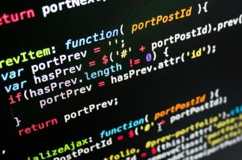

Welcome to the World of Programming!

What is a Programming Language?
Programming language is a set of instructions that a computer compiles and runs programs. Without it, our computers would be defunct and programmers wouldn't be able to tell the computer what we want to do. These program languages allow computers to quickly and efficiently process large complex data to run basic things like a drawing program. I have here 4 pages of 4 computer programming languages, Java, C++, HTML5, and PHP. These four languages are just a handful of many other programming languages being used worldwide, with many new ones being developed as we read.